A Fair Go for the AI Age Federated Sovereign Compute for Australian Communities
Read the complete supplied reference online, or download the original file.
Original source material, including its historical dates and proposals.
Page 1 of 21
{kind=link}
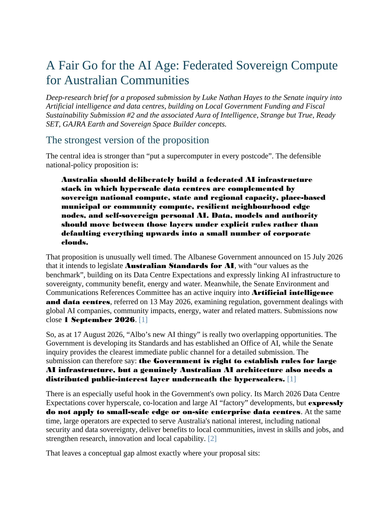
Read selectable text for page 1
Text extracted from this page. Use the page image for its original layout, tables and figures.
for Australian Communities
Deep-research brief for a proposed submission by Luke Nathan Hayes to the Senate inquiry into
Artificial intelligence and data centres, building on Local Government Funding and Fiscal
Sustainability Submission #2 and the associated Aura of Intelligence, Strange but True, Ready
SET, GAJRA Earth and Sovereign Space Builder concepts.
The strongest version of the proposition
The central idea is stronger than “put a supercomputer in every postcode”. The defensible
national-policy proposition is:
Australia should deliberately build a federated AI infrastructure
stack in which hyperscale data centres are complemented by
sovereign national compute, state and regional capacity, place-based
municipal or community compute, resilient neighbourhood edge
nodes, and self-sovereign personal AI. Data, models and authority
should move between those layers under explicit rules rather than
defaulting everything upwards into a small number of corporate
clouds.
That proposition is unusually well timed. The Albanese Government announced on 15 July 2026
that it intends to legislate Australian Standards for AI, with “our values as the
benchmark”, building on its Data Centre Expectations and expressly linking AI infrastructure to
sovereignty, community benefit, energy and water. Meanwhile, the Senate Environment and
Communications References Committee has an active inquiry into Artificial intelligence
and data centres, referred on 13 May 2026, examining regulation, government dealings with
global AI companies, community impacts, energy, water and related matters. Submissions now
close 1 September 2026. [1]
So, as at 17 August 2026, “Albo’s new AI thingy” is really two overlapping opportunities. The
Government is developing its Standards and has established an Office of AI, while the Senate
inquiry provides the clearest immediate public channel for a detailed submission. The
submission can therefore say: the Government is right to establish rules for large
AI infrastructure, but a genuinely Australian AI architecture also needs a
distributed public-interest layer underneath the hyperscalers. [1]
There is an especially useful hook in the Government's own policy. Its March 2026 Data Centre
Expectations cover hyperscale, co-location and large AI “factory” developments, but expressly
do not apply to small-scale edge or on-site enterprise data centres. At the same
time, large operators are expected to serve Australia's national interest, including national
security and data sovereignty, deliver benefits to local communities, invest in skills and jobs, and
strengthen research, innovation and local capability. [2]
That leaves a conceptual gap almost exactly where your proposal sits:
Page 2 of 21
{kind=link}
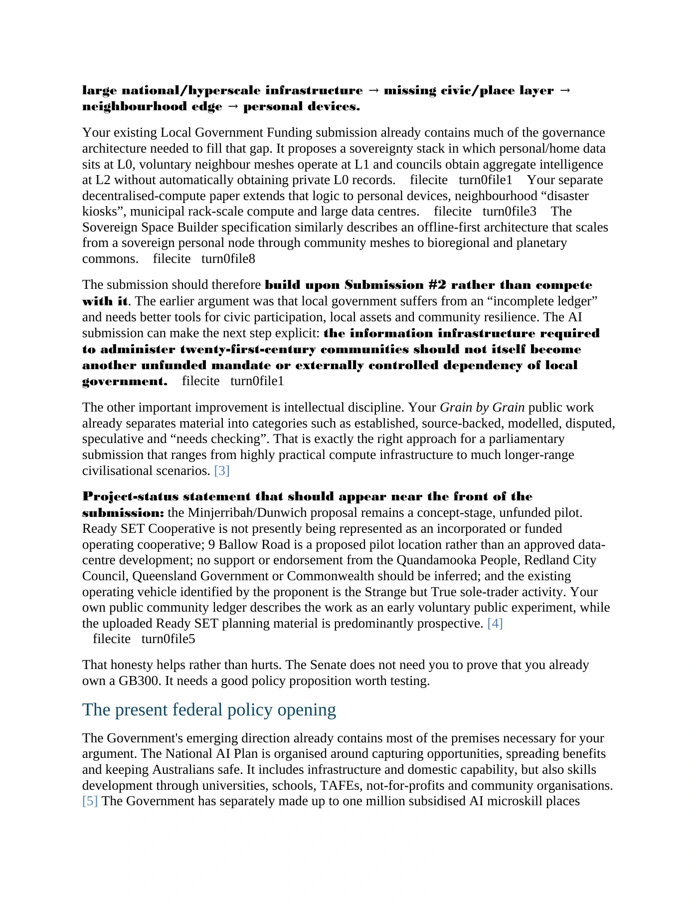
Read selectable text for page 2
Text extracted from this page. Use the page image for its original layout, tables and figures.
neighbourhood edge personal devices.→
Your existing Local Government Funding submission already contains much of the governance
architecture needed to fill that gap. It proposes a sovereignty stack in which personal/home data
sits at L0, voluntary neighbour meshes operate at L1 and councils obtain aggregate intelligence
at L2 without automatically obtaining private L0 records. fileciteturn0file1 Your separate
decentralised-compute paper extends that logic to personal devices, neighbourhood “disaster
kiosks”, municipal rack-scale compute and large data centres. fileciteturn0file3 The
Sovereign Space Builder specification similarly describes an offline-first architecture that scales
from a sovereign personal node through community meshes to bioregional and planetary
commons. fileciteturn0file8
The submission should therefore build upon Submission #2 rather than compete
with it. The earlier argument was that local government suffers from an “incomplete ledger”
and needs better tools for civic participation, local assets and community resilience. The AI
submission can make the next step explicit: the information infrastructure required
to administer twenty-first-century communities should not itself become
another unfunded mandate or externally controlled dependency of local
government. fileciteturn0file1
The other important improvement is intellectual discipline. Your Grain by Grain public work
already separates material into categories such as established, source-backed, modelled, disputed,
speculative and “needs checking”. That is exactly the right approach for a parliamentary
submission that ranges from highly practical compute infrastructure to much longer-range
civilisational scenarios. [3]
Project-status statement that should appear near the front of the
submission: the Minjerribah/Dunwich proposal remains a concept-stage, unfunded pilot.
Ready SET Cooperative is not presently being represented as an incorporated or funded
operating cooperative; 9 Ballow Road is a proposed pilot location rather than an approved data-
centre development; no support or endorsement from the Quandamooka People, Redland City
Council, Queensland Government or Commonwealth should be inferred; and the existing
operating vehicle identified by the proponent is the Strange but True sole-trader activity. Your
own public community ledger describes the work as an early voluntary public experiment, while
the uploaded Ready SET planning material is predominantly prospective. [4]
fileciteturn0file5
That honesty helps rather than hurts. The Senate does not need you to prove that you already
own a GB300. It needs a good policy proposition worth testing.
The present federal policy opening
The Government's emerging direction already contains most of the premises necessary for your
argument. The National AI Plan is organised around capturing opportunities, spreading benefits
and keeping Australians safe. It includes infrastructure and domestic capability, but also skills
development through universities, schools, TAFEs, not-for-profits and community organisations.
[5] The Government has separately made up to one million subsidised AI microskill places
Page 3 of 21
{kind=link}
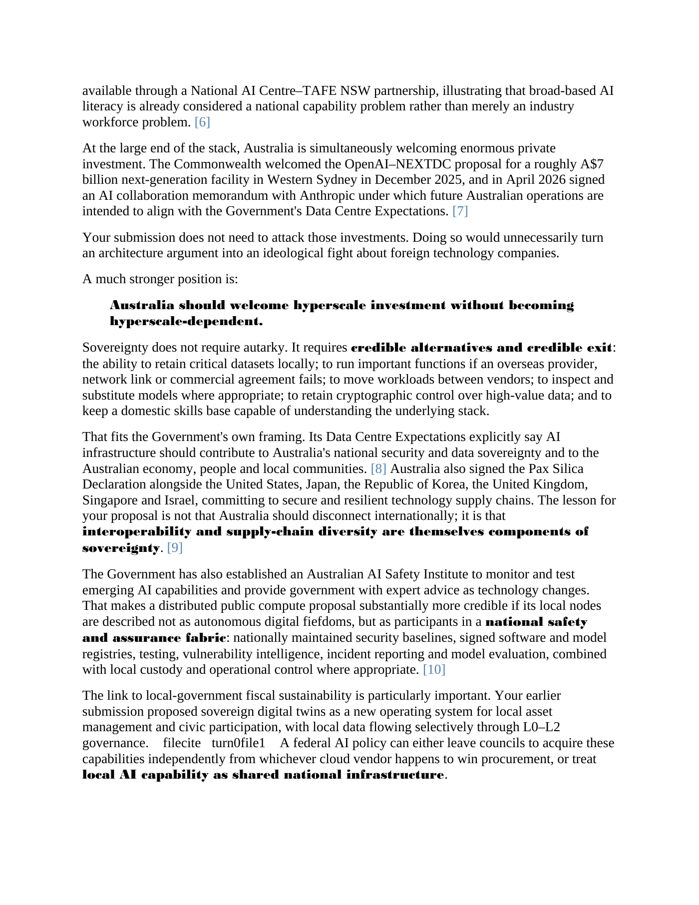
Read selectable text for page 3
Text extracted from this page. Use the page image for its original layout, tables and figures.
literacy is already considered a national capability problem rather than merely an industry
workforce problem. [6]
At the large end of the stack, Australia is simultaneously welcoming enormous private
investment. The Commonwealth welcomed the OpenAI–NEXTDC proposal for a roughly A$7
billion next-generation facility in Western Sydney in December 2025, and in April 2026 signed
an AI collaboration memorandum with Anthropic under which future Australian operations are
intended to align with the Government's Data Centre Expectations. [7]
Your submission does not need to attack those investments. Doing so would unnecessarily turn
an architecture argument into an ideological fight about foreign technology companies.
A much stronger position is:
Australia should welcome hyperscale investment without becoming
hyperscale-dependent.
Sovereignty does not require autarky. It requires credible alternatives and credible exit:
the ability to retain critical datasets locally; to run important functions if an overseas provider,
network link or commercial agreement fails; to move workloads between vendors; to inspect and
substitute models where appropriate; to retain cryptographic control over high-value data; and to
keep a domestic skills base capable of understanding the underlying stack.
That fits the Government's own framing. Its Data Centre Expectations explicitly say AI
infrastructure should contribute to Australia's national security and data sovereignty and to the
Australian economy, people and local communities. [8] Australia also signed the Pax Silica
Declaration alongside the United States, Japan, the Republic of Korea, the United Kingdom,
Singapore and Israel, committing to secure and resilient technology supply chains. The lesson for
your proposal is not that Australia should disconnect internationally; it is that
interoperability and supply-chain diversity are themselves components of
sovereignty. [9]
The Government has also established an Australian AI Safety Institute to monitor and test
emerging AI capabilities and provide government with expert advice as technology changes.
That makes a distributed public compute proposal substantially more credible if its local nodes
are described not as autonomous digital fiefdoms, but as participants in a national safety
and assurance fabric: nationally maintained security baselines, signed software and model
registries, testing, vulnerability intelligence, incident reporting and model evaluation, combined
with local custody and operational control where appropriate. [10]
The link to local-government fiscal sustainability is particularly important. Your earlier
submission proposed sovereign digital twins as a new operating system for local asset
management and civic participation, with local data flowing selectively through L0–L2
governance. fileciteturn0file1 A federal AI policy can either leave councils to acquire these
capabilities independently from whichever cloud vendor happens to win procurement, or treat
local AI capability as shared national infrastructure.
Page 4 of 21
{kind=link}
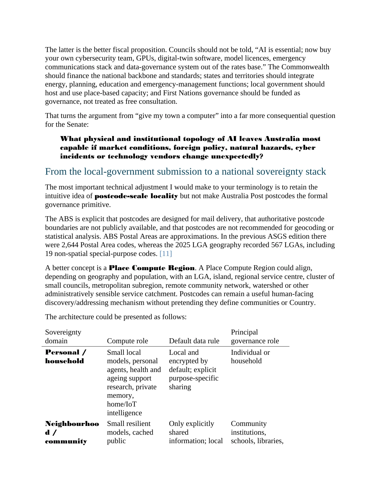
Read selectable text for page 4
Text extracted from this page. Use the page image for its original layout, tables and figures.
your own cybersecurity team, GPUs, digital-twin software, model licences, emergency
communications stack and data-governance system out of the rates base.” The Commonwealth
should finance the national backbone and standards; states and territories should integrate
energy, planning, education and emergency-management functions; local government should
host and use place-based capacity; and First Nations governance should be funded as
governance, not treated as free consultation.
That turns the argument from “give my town a computer” into a far more consequential question
for the Senate:
What physical and institutional topology of AI leaves Australia most
capable if market conditions, foreign policy, natural hazards, cyber
incidents or technology vendors change unexpectedly?
From the local-government submission to a national sovereignty stack
The most important technical adjustment I would make to your terminology is to retain the
intuitive idea of postcode-scale locality but not make Australia Post postcodes the formal
governance primitive.
The ABS is explicit that postcodes are designed for mail delivery, that authoritative postcode
boundaries are not publicly available, and that postcodes are not recommended for geocoding or
statistical analysis. ABS Postal Areas are approximations. In the previous ASGS edition there
were 2,644 Postal Area codes, whereas the 2025 LGA geography recorded 567 LGAs, including
19 non-spatial special-purpose codes. [11]
A better concept is a Place Compute Region. A Place Compute Region could align,
depending on geography and population, with an LGA, island, regional service centre, cluster of
small councils, metropolitan subregion, remote community network, watershed or other
administratively sensible service catchment. Postcodes can remain a useful human-facing
discovery/addressing mechanism without pretending they define communities or Country.
The architecture could be presented as follows:
Sovereignty
domain Compute role Default data rule
Principal
governance role
Personal /
household
Small local
models, personal
agents, health and
ageing support
research, private
memory,
home/IoT
intelligence
Local and
encrypted by
default; explicit
purpose-specific
sharing
Individual or
household
Neighbourhoo
d /
community
Small resilient
models, cached
public
Only explicitly
shared
information; local
Community
institutions,
schools, libraries,
Page 5 of 21
{kind=link}
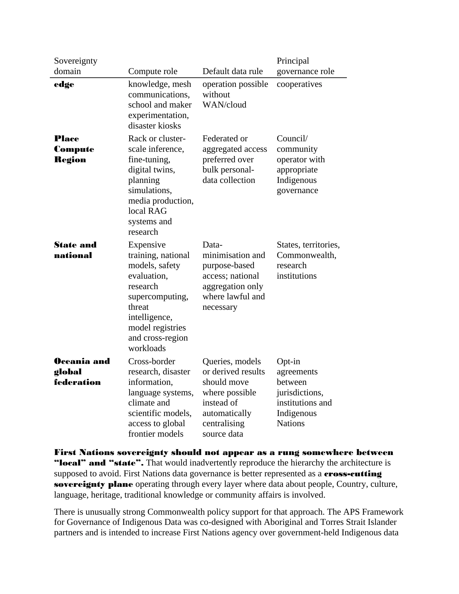
Read selectable text for page 5
Text extracted from this page. Use the page image for its original layout, tables and figures.
domain Compute role Default data rule
Principal
governance role
edge knowledge, mesh
communications,
school and maker
experimentation,
disaster kiosks
operation possible
without
WAN/cloud
cooperatives
Place
Compute
Region
Rack or cluster-
scale inference,
fine-tuning,
digital twins,
planning
simulations,
media production,
local RAG
systems and
research
Federated or
aggregated access
preferred over
bulk personal-
data collection
Council/
community
operator with
appropriate
Indigenous
governance
State and
national
Expensive
training, national
models, safety
evaluation,
research
supercomputing,
threat
intelligence,
model registries
and cross-region
workloads
Data-
minimisation and
purpose-based
access; national
aggregation only
where lawful and
necessary
States, territories,
Commonwealth,
research
institutions
Oceania and
global
federation
Cross-border
research, disaster
information,
language systems,
climate and
scientific models,
access to global
frontier models
Queries, models
or derived results
should move
where possible
instead of
automatically
centralising
source data
Opt-in
agreements
between
jurisdictions,
institutions and
Indigenous
Nations
First Nations sovereignty should not appear as a rung somewhere between
“local” and “state”. That would inadvertently reproduce the hierarchy the architecture is
supposed to avoid. First Nations data governance is better represented as a cross-cutting
sovereignty plane operating through every layer where data about people, Country, culture,
language, heritage, traditional knowledge or community affairs is involved.
There is unusually strong Commonwealth policy support for that approach. The APS Framework
for Governance of Indigenous Data was co-designed with Aboriginal and Torres Strait Islander
partners and is intended to increase First Nations agency over government-held Indigenous data
Page 6 of 21
{kind=link}
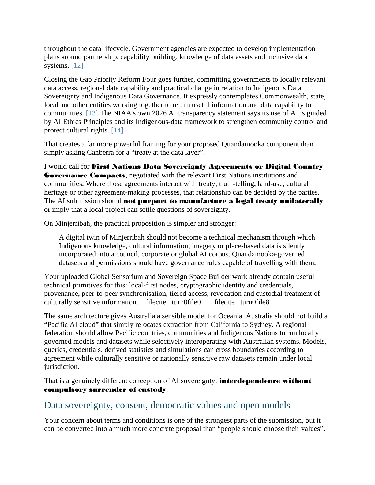
Read selectable text for page 6
Text extracted from this page. Use the page image for its original layout, tables and figures.
plans around partnership, capability building, knowledge of data assets and inclusive data
systems. [12]
Closing the Gap Priority Reform Four goes further, committing governments to locally relevant
data access, regional data capability and practical change in relation to Indigenous Data
Sovereignty and Indigenous Data Governance. It expressly contemplates Commonwealth, state,
local and other entities working together to return useful information and data capability to
communities. [13] The NIAA's own 2026 AI transparency statement says its use of AI is guided
by AI Ethics Principles and its Indigenous-data framework to strengthen community control and
protect cultural rights. [14]
That creates a far more powerful framing for your proposed Quandamooka component than
simply asking Canberra for a “treaty at the data layer”.
I would call for First Nations Data Sovereignty Agreements or Digital Country
Governance Compacts, negotiated with the relevant First Nations institutions and
communities. Where those agreements interact with treaty, truth-telling, land-use, cultural
heritage or other agreement-making processes, that relationship can be decided by the parties.
The AI submission should not purport to manufacture a legal treaty unilaterally
or imply that a local project can settle questions of sovereignty.
On Minjerribah, the practical proposition is simpler and stronger:
A digital twin of Minjerribah should not become a technical mechanism through which
Indigenous knowledge, cultural information, imagery or place-based data is silently
incorporated into a council, corporate or global AI corpus. Quandamooka-governed
datasets and permissions should have governance rules capable of travelling with them.
Your uploaded Global Sensorium and Sovereign Space Builder work already contain useful
technical primitives for this: local-first nodes, cryptographic identity and credentials,
provenance, peer-to-peer synchronisation, tiered access, revocation and custodial treatment of
culturally sensitive information. fileciteturn0file0 fileciteturn0file8
The same architecture gives Australia a sensible model for Oceania. Australia should not build a
“Pacific AI cloud” that simply relocates extraction from California to Sydney. A regional
federation should allow Pacific countries, communities and Indigenous Nations to run locally
governed models and datasets while selectively interoperating with Australian systems. Models,
queries, credentials, derived statistics and simulations can cross boundaries according to
agreement while culturally sensitive or nationally sensitive raw datasets remain under local
jurisdiction.
That is a genuinely different conception of AI sovereignty: interdependence without
compulsory surrender of custody.
Data sovereignty, consent, democratic values and open models
Your concern about terms and conditions is one of the strongest parts of the submission, but it
can be converted into a much more concrete proposal than “people should choose their values”.
Page 7 of 21
{kind=link}
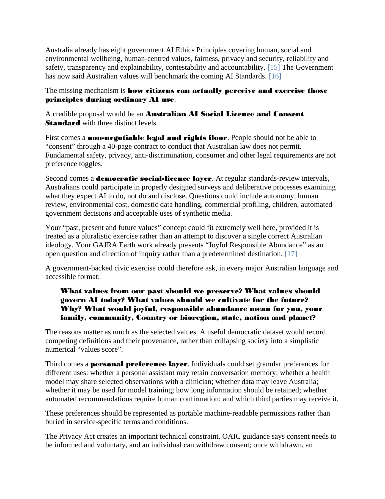
Read selectable text for page 7
Text extracted from this page. Use the page image for its original layout, tables and figures.
environmental wellbeing, human-centred values, fairness, privacy and security, reliability and
safety, transparency and explainability, contestability and accountability. [15] The Government
has now said Australian values will benchmark the coming AI Standards. [16]
The missing mechanism is how citizens can actually perceive and exercise those
principles during ordinary AI use.
A credible proposal would be an Australian AI Social Licence and Consent
Standard with three distinct levels.
First comes a non-negotiable legal and rights floor. People should not be able to
“consent” through a 40-page contract to conduct that Australian law does not permit.
Fundamental safety, privacy, anti-discrimination, consumer and other legal requirements are not
preference toggles.
Second comes a democratic social-licence layer. At regular standards-review intervals,
Australians could participate in properly designed surveys and deliberative processes examining
what they expect AI to do, not do and disclose. Questions could include autonomy, human
review, environmental cost, domestic data handling, commercial profiling, children, automated
government decisions and acceptable uses of synthetic media.
Your “past, present and future values” concept could fit extremely well here, provided it is
treated as a pluralistic exercise rather than an attempt to discover a single correct Australian
ideology. Your GAJRA Earth work already presents “Joyful Responsible Abundance” as an
open question and direction of inquiry rather than a predetermined destination. [17]
A government-backed civic exercise could therefore ask, in every major Australian language and
accessible format:
What values from our past should we preserve? What values should
govern AI today? What values should we cultivate for the future?
Why? What would joyful, responsible abundance mean for you, your
family, community, Country or bioregion, state, nation and planet?
The reasons matter as much as the selected values. A useful democratic dataset would record
competing definitions and their provenance, rather than collapsing society into a simplistic
numerical “values score”.
Third comes a personal preference layer. Individuals could set granular preferences for
different uses: whether a personal assistant may retain conversation memory; whether a health
model may share selected observations with a clinician; whether data may leave Australia;
whether it may be used for model training; how long information should be retained; whether
automated recommendations require human confirmation; and which third parties may receive it.
These preferences should be represented as portable machine-readable permissions rather than
buried in service-specific terms and conditions.
The Privacy Act creates an important technical constraint. OAIC guidance says consent needs to
be informed and voluntary, and an individual can withdraw consent; once withdrawn, an
Page 8 of 21
{kind=link}
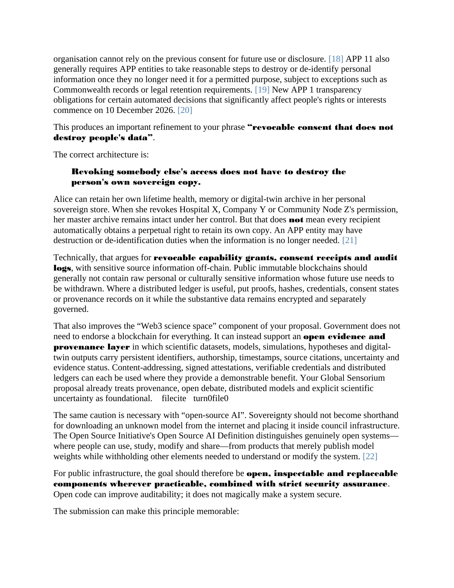
Read selectable text for page 8
Text extracted from this page. Use the page image for its original layout, tables and figures.
generally requires APP entities to take reasonable steps to destroy or de-identify personal
information once they no longer need it for a permitted purpose, subject to exceptions such as
Commonwealth records or legal retention requirements. [19] New APP 1 transparency
obligations for certain automated decisions that significantly affect people's rights or interests
commence on 10 December 2026. [20]
This produces an important refinement to your phrase “revocable consent that does not
destroy people's data”.
The correct architecture is:
Revoking somebody else's access does not have to destroy the
person's own sovereign copy.
Alice can retain her own lifetime health, memory or digital-twin archive in her personal
sovereign store. When she revokes Hospital X, Company Y or Community Node Z's permission,
her master archive remains intact under her control. But that does not mean every recipient
automatically obtains a perpetual right to retain its own copy. An APP entity may have
destruction or de-identification duties when the information is no longer needed. [21]
Technically, that argues for revocable capability grants, consent receipts and audit
logs, with sensitive source information off-chain. Public immutable blockchains should
generally not contain raw personal or culturally sensitive information whose future use needs to
be withdrawn. Where a distributed ledger is useful, put proofs, hashes, credentials, consent states
or provenance records on it while the substantive data remains encrypted and separately
governed.
That also improves the “Web3 science space” component of your proposal. Government does not
need to endorse a blockchain for everything. It can instead support an open evidence and
provenance layer in which scientific datasets, models, simulations, hypotheses and digital-
twin outputs carry persistent identifiers, authorship, timestamps, source citations, uncertainty and
evidence status. Content-addressing, signed attestations, verifiable credentials and distributed
ledgers can each be used where they provide a demonstrable benefit. Your Global Sensorium
proposal already treats provenance, open debate, distributed models and explicit scientific
uncertainty as foundational. fileciteturn0file0
The same caution is necessary with “open-source AI”. Sovereignty should not become shorthand
for downloading an unknown model from the internet and placing it inside council infrastructure.
The Open Source Initiative's Open Source AI Definition distinguishes genuinely open systems—
where people can use, study, modify and share—from products that merely publish model
weights while withholding other elements needed to understand or modify the system. [22]
For public infrastructure, the goal should therefore be open, inspectable and replaceable
components wherever practicable, combined with strict security assurance.
Open code can improve auditability; it does not magically make a system secure.
The submission can make this principle memorable:
Page 9 of 21
{kind=link}
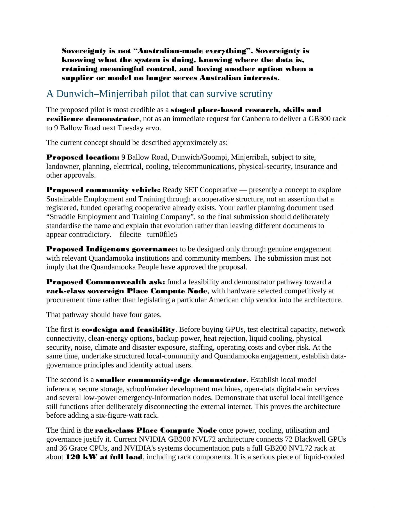
Read selectable text for page 9
Text extracted from this page. Use the page image for its original layout, tables and figures.
knowing what the system is doing, knowing where the data is,
retaining meaningful control, and having another option when a
supplier or model no longer serves Australian interests.
A Dunwich–Minjerribah pilot that can survive scrutiny
The proposed pilot is most credible as a staged place-based research, skills and
resilience demonstrator, not as an immediate request for Canberra to deliver a GB300 rack
to 9 Ballow Road next Tuesday arvo.
The current concept should be described approximately as:
Proposed location: 9 Ballow Road, Dunwich/Goompi, Minjerribah, subject to site,
landowner, planning, electrical, cooling, telecommunications, physical-security, insurance and
other approvals.
Proposed community vehicle: Ready SET Cooperative — presently a concept to explore
Sustainable Employment and Training through a cooperative structure, not an assertion that a
registered, funded operating cooperative already exists. Your earlier planning document used
“Straddie Employment and Training Company”, so the final submission should deliberately
standardise the name and explain that evolution rather than leaving different documents to
appear contradictory. fileciteturn0file5
Proposed Indigenous governance: to be designed only through genuine engagement
with relevant Quandamooka institutions and community members. The submission must not
imply that the Quandamooka People have approved the proposal.
Proposed Commonwealth ask: fund a feasibility and demonstrator pathway toward a
rack-class sovereign Place Compute Node, with hardware selected competitively at
procurement time rather than legislating a particular American chip vendor into the architecture.
That pathway should have four gates.
The first is co-design and feasibility. Before buying GPUs, test electrical capacity, network
connectivity, clean-energy options, backup power, heat rejection, liquid cooling, physical
security, noise, climate and disaster exposure, staffing, operating costs and cyber risk. At the
same time, undertake structured local-community and Quandamooka engagement, establish data-
governance principles and identify actual users.
The second is a smaller community-edge demonstrator. Establish local model
inference, secure storage, school/maker development machines, open-data digital-twin services
and several low-power emergency-information nodes. Demonstrate that useful local intelligence
still functions after deliberately disconnecting the external internet. This proves the architecture
before adding a six-figure-watt rack.
The third is the rack-class Place Compute Node once power, cooling, utilisation and
governance justify it. Current NVIDIA GB200 NVL72 architecture connects 72 Blackwell GPUs
and 36 Grace CPUs, and NVIDIA's systems documentation puts a full GB200 NVL72 rack at
about 120 kW at full load, including rack components. It is a serious piece of liquid-cooled
Page 10 of 21
{kind=link}
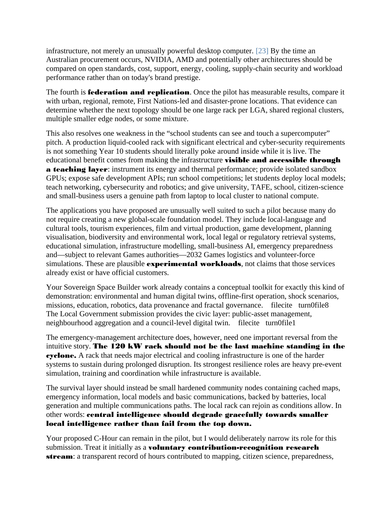
Read selectable text for page 10
Text extracted from this page. Use the page image for its original layout, tables and figures.
Australian procurement occurs, NVIDIA, AMD and potentially other architectures should be
compared on open standards, cost, support, energy, cooling, supply-chain security and workload
performance rather than on today's brand prestige.
The fourth is federation and replication. Once the pilot has measurable results, compare it
with urban, regional, remote, First Nations-led and disaster-prone locations. That evidence can
determine whether the next topology should be one large rack per LGA, shared regional clusters,
multiple smaller edge nodes, or some mixture.
This also resolves one weakness in the “school students can see and touch a supercomputer”
pitch. A production liquid-cooled rack with significant electrical and cyber-security requirements
is not something Year 10 students should literally poke around inside while it is live. The
educational benefit comes from making the infrastructure visible and accessible through
a teaching layer: instrument its energy and thermal performance; provide isolated sandbox
GPUs; expose safe development APIs; run school competitions; let students deploy local models;
teach networking, cybersecurity and robotics; and give university, TAFE, school, citizen-science
and small-business users a genuine path from laptop to local cluster to national compute.
The applications you have proposed are unusually well suited to such a pilot because many do
not require creating a new global-scale foundation model. They include local-language and
cultural tools, tourism experiences, film and virtual production, game development, planning
visualisation, biodiversity and environmental work, local legal or regulatory retrieval systems,
educational simulation, infrastructure modelling, small-business AI, emergency preparedness
and—subject to relevant Games authorities—2032 Games logistics and volunteer-force
simulations. These are plausible experimental workloads, not claims that those services
already exist or have official customers.
Your Sovereign Space Builder work already contains a conceptual toolkit for exactly this kind of
demonstration: environmental and human digital twins, offline-first operation, shock scenarios,
missions, education, robotics, data provenance and fractal governance. fileciteturn0file8
The Local Government submission provides the civic layer: public-asset management,
neighbourhood aggregation and a council-level digital twin. fileciteturn0file1
The emergency-management architecture does, however, need one important reversal from the
intuitive story. The 120 kW rack should not be the last machine standing in the
cyclone. A rack that needs major electrical and cooling infrastructure is one of the harder
systems to sustain during prolonged disruption. Its strongest resilience roles are heavy pre-event
simulation, training and coordination while infrastructure is available.
The survival layer should instead be small hardened community nodes containing cached maps,
emergency information, local models and basic communications, backed by batteries, local
generation and multiple communications paths. The local rack can rejoin as conditions allow. In
other words: central intelligence should degrade gracefully towards smaller
local intelligence rather than fail from the top down.
Your proposed C-Hour can remain in the pilot, but I would deliberately narrow its role for this
submission. Treat it initially as a voluntary contribution-recognition research
stream: a transparent record of hours contributed to mapping, citizen science, preparedness,
Page 11 of 21
{kind=link}
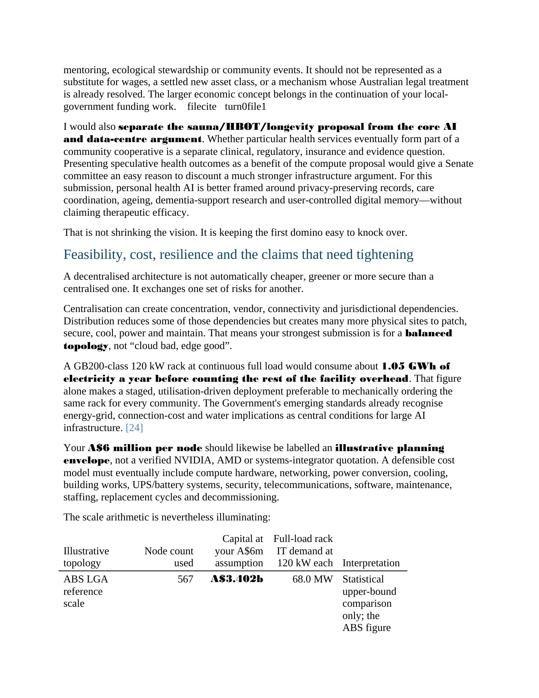
Read selectable text for page 11
Text extracted from this page. Use the page image for its original layout, tables and figures.
substitute for wages, a settled new asset class, or a mechanism whose Australian legal treatment
is already resolved. The larger economic concept belongs in the continuation of your local-
government funding work. fileciteturn0file1
I would also separate the sauna/HBOT/longevity proposal from the core AI
and data-centre argument. Whether particular health services eventually form part of a
community cooperative is a separate clinical, regulatory, insurance and evidence question.
Presenting speculative health outcomes as a benefit of the compute proposal would give a Senate
committee an easy reason to discount a much stronger infrastructure argument. For this
submission, personal health AI is better framed around privacy-preserving records, care
coordination, ageing, dementia-support research and user-controlled digital memory—without
claiming therapeutic efficacy.
That is not shrinking the vision. It is keeping the first domino easy to knock over.
Feasibility, cost, resilience and the claims that need tightening
A decentralised architecture is not automatically cheaper, greener or more secure than a
centralised one. It exchanges one set of risks for another.
Centralisation can create concentration, vendor, connectivity and jurisdictional dependencies.
Distribution reduces some of those dependencies but creates many more physical sites to patch,
secure, cool, power and maintain. That means your strongest submission is for a balanced
topology, not “cloud bad, edge good”.
A GB200-class 120 kW rack at continuous full load would consume about 1.05 GWh of
electricity a year before counting the rest of the facility overhead. That figure
alone makes a staged, utilisation-driven deployment preferable to mechanically ordering the
same rack for every community. The Government's emerging standards already recognise
energy-grid, connection-cost and water implications as central conditions for large AI
infrastructure. [24]
Your A$6 million per node should likewise be labelled an illustrative planning
envelope, not a verified NVIDIA, AMD or systems-integrator quotation. A defensible cost
model must eventually include compute hardware, networking, power conversion, cooling,
building works, UPS/battery systems, security, telecommunications, software, maintenance,
staffing, replacement cycles and decommissioning.
The scale arithmetic is nevertheless illuminating:
Illustrative
topology
Node count
used
Capital at
your A$6m
assumption
Full-load rack
IT demand at
120 kW each Interpretation
ABS LGA
reference
scale
567 A$3.402b 68.0 MW Statistical
upper-bound
comparison
only; the
ABS figure
Page 12 of 21
{kind=link}
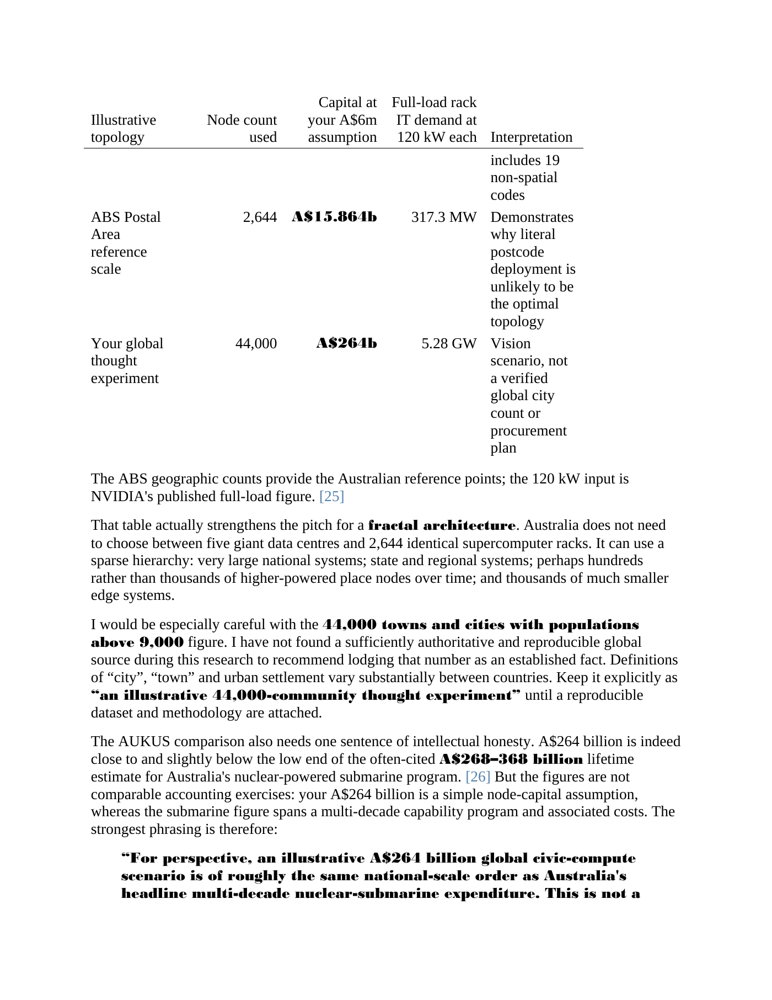
Read selectable text for page 12
Text extracted from this page. Use the page image for its original layout, tables and figures.
topology
Node count
used
Capital at
your A$6m
assumption
Full-load rack
IT demand at
120 kW each Interpretation
includes 19
non-spatial
codes
ABS Postal
Area
reference
scale
2,644 A$15.864b 317.3 MW Demonstrates
why literal
postcode
deployment is
unlikely to be
the optimal
topology
Your global
thought
experiment
44,000 A$264b 5.28 GW Vision
scenario, not
a verified
global city
count or
procurement
plan
The ABS geographic counts provide the Australian reference points; the 120 kW input is
NVIDIA's published full-load figure. [25]
That table actually strengthens the pitch for a fractal architecture. Australia does not need
to choose between five giant data centres and 2,644 identical supercomputer racks. It can use a
sparse hierarchy: very large national systems; state and regional systems; perhaps hundreds
rather than thousands of higher-powered place nodes over time; and thousands of much smaller
edge systems.
I would be especially careful with the 44,000 towns and cities with populations
above 9,000 figure. I have not found a sufficiently authoritative and reproducible global
source during this research to recommend lodging that number as an established fact. Definitions
of “city”, “town” and urban settlement vary substantially between countries. Keep it explicitly as
“an illustrative 44,000-community thought experiment” until a reproducible
dataset and methodology are attached.
The AUKUS comparison also needs one sentence of intellectual honesty. A$264 billion is indeed
close to and slightly below the low end of the often-cited A$268–368 billion lifetime
estimate for Australia's nuclear-powered submarine program. [26] But the figures are not
comparable accounting exercises: your A$264 billion is a simple node-capital assumption,
whereas the submarine figure spans a multi-decade capability program and associated costs. The
strongest phrasing is therefore:
“For perspective, an illustrative A$264 billion global civic-compute
scenario is of roughly the same national-scale order as Australia's
headline multi-decade nuclear-submarine expenditure. This is not a
Page 13 of 21
{kind=link}
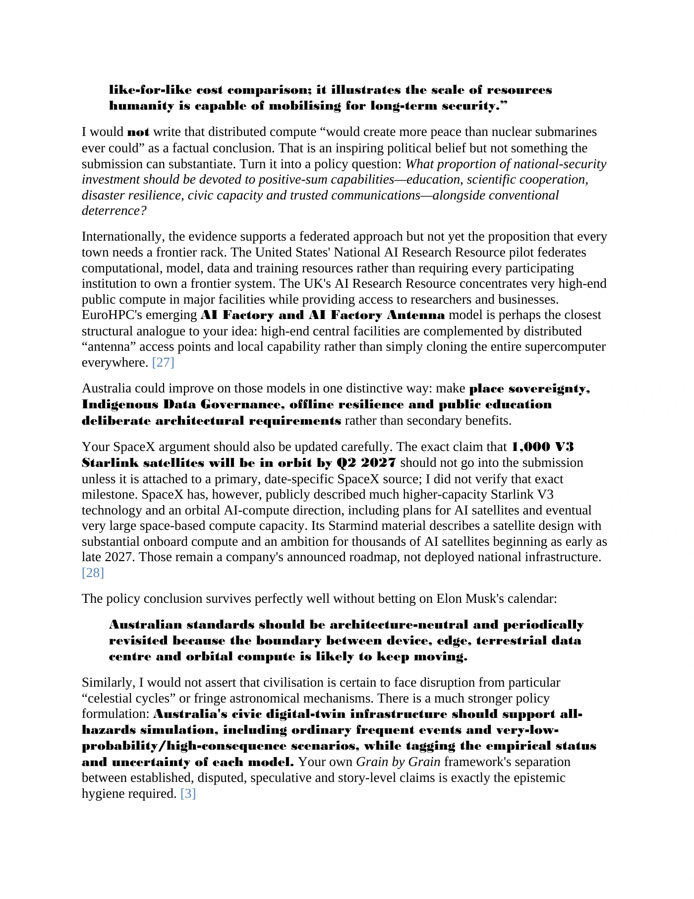
Read selectable text for page 13
Text extracted from this page. Use the page image for its original layout, tables and figures.
humanity is capable of mobilising for long-term security.”
I would not write that distributed compute “would create more peace than nuclear submarines
ever could” as a factual conclusion. That is an inspiring political belief but not something the
submission can substantiate. Turn it into a policy question: What proportion of national-security
investment should be devoted to positive-sum capabilities—education, scientific cooperation,
disaster resilience, civic capacity and trusted communications—alongside conventional
deterrence?
Internationally, the evidence supports a federated approach but not yet the proposition that every
town needs a frontier rack. The United States' National AI Research Resource pilot federates
computational, model, data and training resources rather than requiring every participating
institution to own a frontier system. The UK's AI Research Resource concentrates very high-end
public compute in major facilities while providing access to researchers and businesses.
EuroHPC's emerging AI Factory and AI Factory Antenna model is perhaps the closest
structural analogue to your idea: high-end central facilities are complemented by distributed
“antenna” access points and local capability rather than simply cloning the entire supercomputer
everywhere. [27]
Australia could improve on those models in one distinctive way: make place sovereignty,
Indigenous Data Governance, offline resilience and public education
deliberate architectural requirements rather than secondary benefits.
Your SpaceX argument should also be updated carefully. The exact claim that 1,000 V3
Starlink satellites will be in orbit by Q2 2027 should not go into the submission
unless it is attached to a primary, date-specific SpaceX source; I did not verify that exact
milestone. SpaceX has, however, publicly described much higher-capacity Starlink V3
technology and an orbital AI-compute direction, including plans for AI satellites and eventual
very large space-based compute capacity. Its Starmind material describes a satellite design with
substantial onboard compute and an ambition for thousands of AI satellites beginning as early as
late 2027. Those remain a company's announced roadmap, not deployed national infrastructure.
[28]
The policy conclusion survives perfectly well without betting on Elon Musk's calendar:
Australian standards should be architecture-neutral and periodically
revisited because the boundary between device, edge, terrestrial data
centre and orbital compute is likely to keep moving.
Similarly, I would not assert that civilisation is certain to face disruption from particular
“celestial cycles” or fringe astronomical mechanisms. There is a much stronger policy
formulation: Australia's civic digital-twin infrastructure should support all-
hazards simulation, including ordinary frequent events and very-low-
probability/high-consequence scenarios, while tagging the empirical status
and uncertainty of each model. Your own Grain by Grain framework's separation
between established, disputed, speculative and story-level claims is exactly the epistemic
hygiene required. [3]
Page 14 of 21
{kind=link}
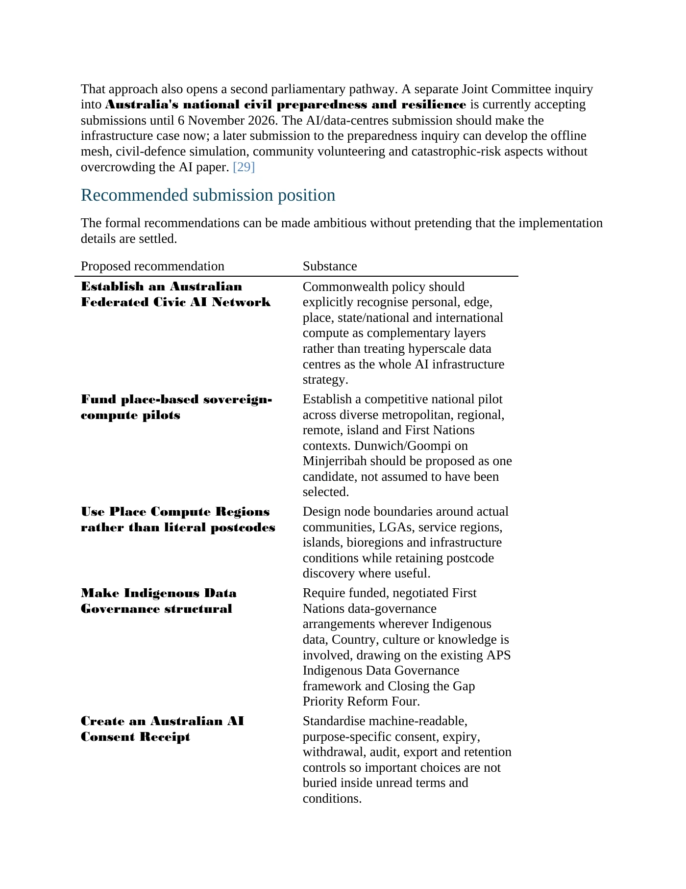
Read selectable text for page 14
Text extracted from this page. Use the page image for its original layout, tables and figures.
into Australia's national civil preparedness and resilience is currently accepting
submissions until 6 November 2026. The AI/data-centres submission should make the
infrastructure case now; a later submission to the preparedness inquiry can develop the offline
mesh, civil-defence simulation, community volunteering and catastrophic-risk aspects without
overcrowding the AI paper. [29]
Recommended submission position
The formal recommendations can be made ambitious without pretending that the implementation
details are settled.
Proposed recommendation Substance
Establish an Australian
Federated Civic AI Network
Commonwealth policy should
explicitly recognise personal, edge,
place, state/national and international
compute as complementary layers
rather than treating hyperscale data
centres as the whole AI infrastructure
strategy.
Fund place-based sovereign-
compute pilots
Establish a competitive national pilot
across diverse metropolitan, regional,
remote, island and First Nations
contexts. Dunwich/Goompi on
Minjerribah should be proposed as one
candidate, not assumed to have been
selected.
Use Place Compute Regions
rather than literal postcodes
Design node boundaries around actual
communities, LGAs, service regions,
islands, bioregions and infrastructure
conditions while retaining postcode
discovery where useful.
Make Indigenous Data
Governance structural
Require funded, negotiated First
Nations data-governance
arrangements wherever Indigenous
data, Country, culture or knowledge is
involved, drawing on the existing APS
Indigenous Data Governance
framework and Closing the Gap
Priority Reform Four.
Create an Australian AI
Consent Receipt
Standardise machine-readable,
purpose-specific consent, expiry,
withdrawal, audit, export and retention
controls so important choices are not
buried inside unread terms and
conditions.
Page 15 of 21
{kind=link}
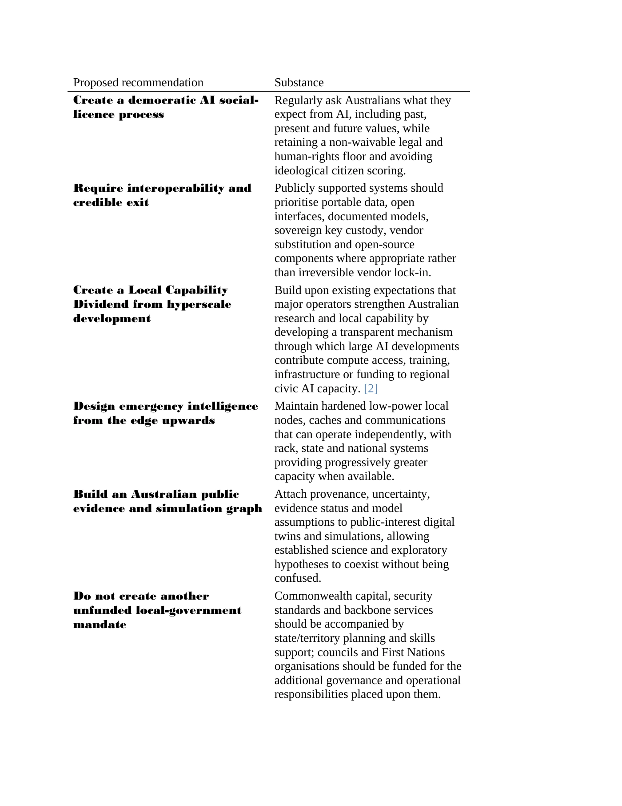
Read selectable text for page 15
Text extracted from this page. Use the page image for its original layout, tables and figures.
Create a democratic AI social-
licence process
Regularly ask Australians what they
expect from AI, including past,
present and future values, while
retaining a non-waivable legal and
human-rights floor and avoiding
ideological citizen scoring.
Require interoperability and
credible exit
Publicly supported systems should
prioritise portable data, open
interfaces, documented models,
sovereign key custody, vendor
substitution and open-source
components where appropriate rather
than irreversible vendor lock-in.
Create a Local Capability
Dividend from hyperscale
development
Build upon existing expectations that
major operators strengthen Australian
research and local capability by
developing a transparent mechanism
through which large AI developments
contribute compute access, training,
infrastructure or funding to regional
civic AI capacity. [2]
Design emergency intelligence
from the edge upwards
Maintain hardened low-power local
nodes, caches and communications
that can operate independently, with
rack, state and national systems
providing progressively greater
capacity when available.
Build an Australian public
evidence and simulation graph
Attach provenance, uncertainty,
evidence status and model
assumptions to public-interest digital
twins and simulations, allowing
established science and exploratory
hypotheses to coexist without being
confused.
Do not create another
unfunded local-government
mandate
Commonwealth capital, security
standards and backbone services
should be accompanied by
state/territory planning and skills
support; councils and First Nations
organisations should be funded for the
additional governance and operational
responsibilities placed upon them.
Page 16 of 21
{kind=link}
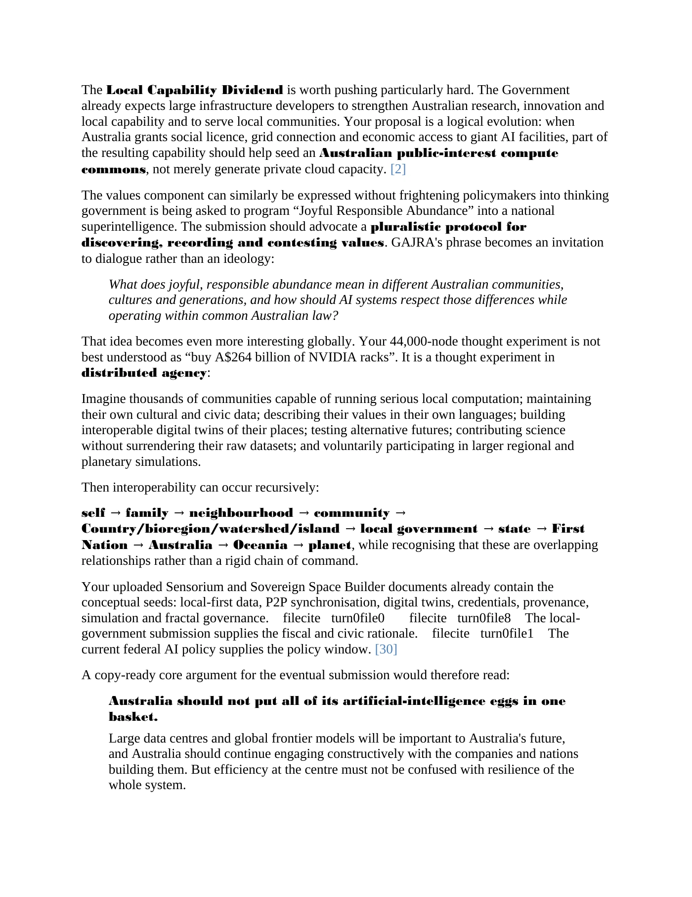
Read selectable text for page 16
Text extracted from this page. Use the page image for its original layout, tables and figures.
already expects large infrastructure developers to strengthen Australian research, innovation and
local capability and to serve local communities. Your proposal is a logical evolution: when
Australia grants social licence, grid connection and economic access to giant AI facilities, part of
the resulting capability should help seed an Australian public-interest compute
commons, not merely generate private cloud capacity. [2]
The values component can similarly be expressed without frightening policymakers into thinking
government is being asked to program “Joyful Responsible Abundance” into a national
superintelligence. The submission should advocate a pluralistic protocol for
discovering, recording and contesting values. GAJRA's phrase becomes an invitation
to dialogue rather than an ideology:
What does joyful, responsible abundance mean in different Australian communities,
cultures and generations, and how should AI systems respect those differences while
operating within common Australian law?
That idea becomes even more interesting globally. Your 44,000-node thought experiment is not
best understood as “buy A$264 billion of NVIDIA racks”. It is a thought experiment in
distributed agency:
Imagine thousands of communities capable of running serious local computation; maintaining
their own cultural and civic data; describing their values in their own languages; building
interoperable digital twins of their places; testing alternative futures; contributing science
without surrendering their raw datasets; and voluntarily participating in larger regional and
planetary simulations.
Then interoperability can occur recursively:
self family neighbourhood community → → → →
Country/bioregion/watershed/island local government state First → → →
Nation Australia Oceania planet→ → → , while recognising that these are overlapping
relationships rather than a rigid chain of command.
Your uploaded Sensorium and Sovereign Space Builder documents already contain the
conceptual seeds: local-first data, P2P synchronisation, digital twins, credentials, provenance,
simulation and fractal governance. fileciteturn0file0 fileciteturn0file8 The local-
government submission supplies the fiscal and civic rationale. fileciteturn0file1 The
current federal AI policy supplies the policy window. [30]
A copy-ready core argument for the eventual submission would therefore read:
Australia should not put all of its artificial-intelligence eggs in one
basket.
Large data centres and global frontier models will be important to Australia's future,
and Australia should continue engaging constructively with the companies and nations
building them. But efficiency at the centre must not be confused with resilience of the
whole system.
Page 17 of 21
{kind=link}
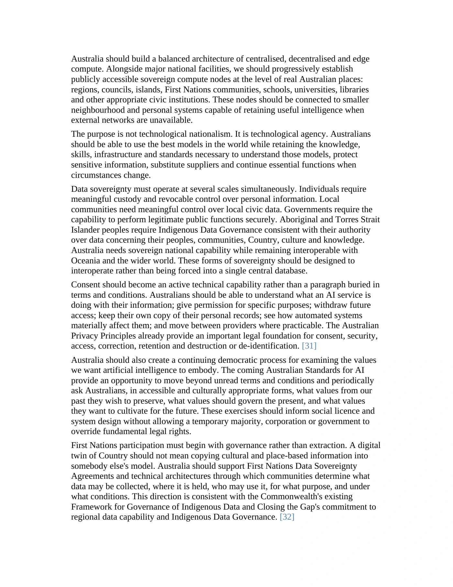
Read selectable text for page 17
Text extracted from this page. Use the page image for its original layout, tables and figures.
compute. Alongside major national facilities, we should progressively establish
publicly accessible sovereign compute nodes at the level of real Australian places:
regions, councils, islands, First Nations communities, schools, universities, libraries
and other appropriate civic institutions. These nodes should be connected to smaller
neighbourhood and personal systems capable of retaining useful intelligence when
external networks are unavailable.
The purpose is not technological nationalism. It is technological agency. Australians
should be able to use the best models in the world while retaining the knowledge,
skills, infrastructure and standards necessary to understand those models, protect
sensitive information, substitute suppliers and continue essential functions when
circumstances change.
Data sovereignty must operate at several scales simultaneously. Individuals require
meaningful custody and revocable control over personal information. Local
communities need meaningful control over local civic data. Governments require the
capability to perform legitimate public functions securely. Aboriginal and Torres Strait
Islander peoples require Indigenous Data Governance consistent with their authority
over data concerning their peoples, communities, Country, culture and knowledge.
Australia needs sovereign national capability while remaining interoperable with
Oceania and the wider world. These forms of sovereignty should be designed to
interoperate rather than being forced into a single central database.
Consent should become an active technical capability rather than a paragraph buried in
terms and conditions. Australians should be able to understand what an AI service is
doing with their information; give permission for specific purposes; withdraw future
access; keep their own copy of their personal records; see how automated systems
materially affect them; and move between providers where practicable. The Australian
Privacy Principles already provide an important legal foundation for consent, security,
access, correction, retention and destruction or de-identification. [31]
Australia should also create a continuing democratic process for examining the values
we want artificial intelligence to embody. The coming Australian Standards for AI
provide an opportunity to move beyond unread terms and conditions and periodically
ask Australians, in accessible and culturally appropriate forms, what values from our
past they wish to preserve, what values should govern the present, and what values
they want to cultivate for the future. These exercises should inform social licence and
system design without allowing a temporary majority, corporation or government to
override fundamental legal rights.
First Nations participation must begin with governance rather than extraction. A digital
twin of Country should not mean copying cultural and place-based information into
somebody else's model. Australia should support First Nations Data Sovereignty
Agreements and technical architectures through which communities determine what
data may be collected, where it is held, who may use it, for what purpose, and under
what conditions. This direction is consistent with the Commonwealth's existing
Framework for Governance of Indigenous Data and Closing the Gap's commitment to
regional data capability and Indigenous Data Governance. [32]
Page 18 of 21
{kind=link}
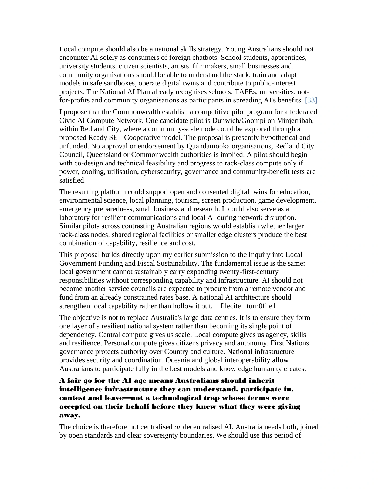
Read selectable text for page 18
Text extracted from this page. Use the page image for its original layout, tables and figures.
encounter AI solely as consumers of foreign chatbots. School students, apprentices,
university students, citizen scientists, artists, filmmakers, small businesses and
community organisations should be able to understand the stack, train and adapt
models in safe sandboxes, operate digital twins and contribute to public-interest
projects. The National AI Plan already recognises schools, TAFEs, universities, not-
for-profits and community organisations as participants in spreading AI's benefits. [33]
I propose that the Commonwealth establish a competitive pilot program for a federated
Civic AI Compute Network. One candidate pilot is Dunwich/Goompi on Minjerribah,
within Redland City, where a community-scale node could be explored through a
proposed Ready SET Cooperative model. The proposal is presently hypothetical and
unfunded. No approval or endorsement by Quandamooka organisations, Redland City
Council, Queensland or Commonwealth authorities is implied. A pilot should begin
with co-design and technical feasibility and progress to rack-class compute only if
power, cooling, utilisation, cybersecurity, governance and community-benefit tests are
satisfied.
The resulting platform could support open and consented digital twins for education,
environmental science, local planning, tourism, screen production, game development,
emergency preparedness, small business and research. It could also serve as a
laboratory for resilient communications and local AI during network disruption.
Similar pilots across contrasting Australian regions would establish whether larger
rack-class nodes, shared regional facilities or smaller edge clusters produce the best
combination of capability, resilience and cost.
This proposal builds directly upon my earlier submission to the Inquiry into Local
Government Funding and Fiscal Sustainability. The fundamental issue is the same:
local government cannot sustainably carry expanding twenty-first-century
responsibilities without corresponding capability and infrastructure. AI should not
become another service councils are expected to procure from a remote vendor and
fund from an already constrained rates base. A national AI architecture should
strengthen local capability rather than hollow it out. fileciteturn0file1
The objective is not to replace Australia's large data centres. It is to ensure they form
one layer of a resilient national system rather than becoming its single point of
dependency. Central compute gives us scale. Local compute gives us agency, skills
and resilience. Personal compute gives citizens privacy and autonomy. First Nations
governance protects authority over Country and culture. National infrastructure
provides security and coordination. Oceania and global interoperability allow
Australians to participate fully in the best models and knowledge humanity creates.
A fair go for the AI age means Australians should inherit
intelligence infrastructure they can understand, participate in,
contest and leave—not a technological trap whose terms were
accepted on their behalf before they knew what they were giving
away.
The choice is therefore not centralised or decentralised AI. Australia needs both, joined
by open standards and clear sovereignty boundaries. We should use this period of
Page 19 of 21
{kind=link}
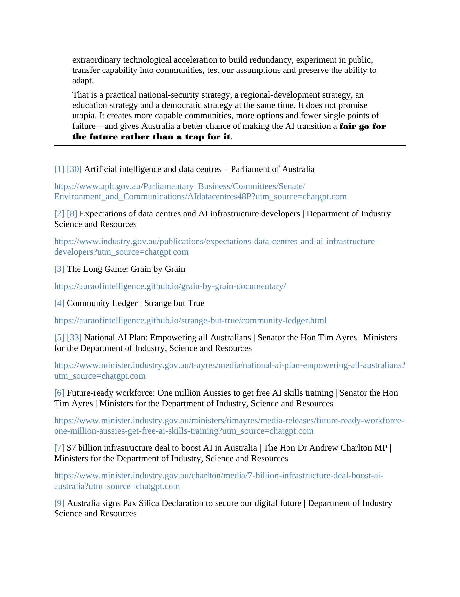
Read selectable text for page 19
Text extracted from this page. Use the page image for its original layout, tables and figures.
transfer capability into communities, test our assumptions and preserve the ability to
adapt.
That is a practical national-security strategy, a regional-development strategy, an
education strategy and a democratic strategy at the same time. It does not promise
utopia. It creates more capable communities, more options and fewer single points of
failure—and gives Australia a better chance of making the AI transition a fair go for
the future rather than a trap for it.
[1] [30] Artificial intelligence and data centres – Parliament of Australia
https://www.aph.gov.au/Parliamentary_Business/Committees/Senate/
Environment_and_Communications/AIdatacentres48P?utm_source=chatgpt.com
[2] [8] Expectations of data centres and AI infrastructure developers | Department of Industry
Science and Resources
https://www.industry.gov.au/publications/expectations-data-centres-and-ai-infrastructure-
developers?utm_source=chatgpt.com
[3] The Long Game: Grain by Grain
https://auraofintelligence.github.io/grain-by-grain-documentary/
[4] Community Ledger | Strange but True
https://auraofintelligence.github.io/strange-but-true/community-ledger.html
[5] [33] National AI Plan: Empowering all Australians | Senator the Hon Tim Ayres | Ministers
for the Department of Industry, Science and Resources
https://www.minister.industry.gov.au/t-ayres/media/national-ai-plan-empowering-all-australians?
utm_source=chatgpt.com
[6] Future-ready workforce: One million Aussies to get free AI skills training | Senator the Hon
Tim Ayres | Ministers for the Department of Industry, Science and Resources
https://www.minister.industry.gov.au/ministers/timayres/media-releases/future-ready-workforce-
one-million-aussies-get-free-ai-skills-training?utm_source=chatgpt.com
[7] $7 billion infrastructure deal to boost AI in Australia | The Hon Dr Andrew Charlton MP |
Ministers for the Department of Industry, Science and Resources
https://www.minister.industry.gov.au/charlton/media/7-billion-infrastructure-deal-boost-ai-
australia?utm_source=chatgpt.com
[9] Australia signs Pax Silica Declaration to secure our digital future | Department of Industry
Science and Resources
Page 20 of 21
{kind=link}
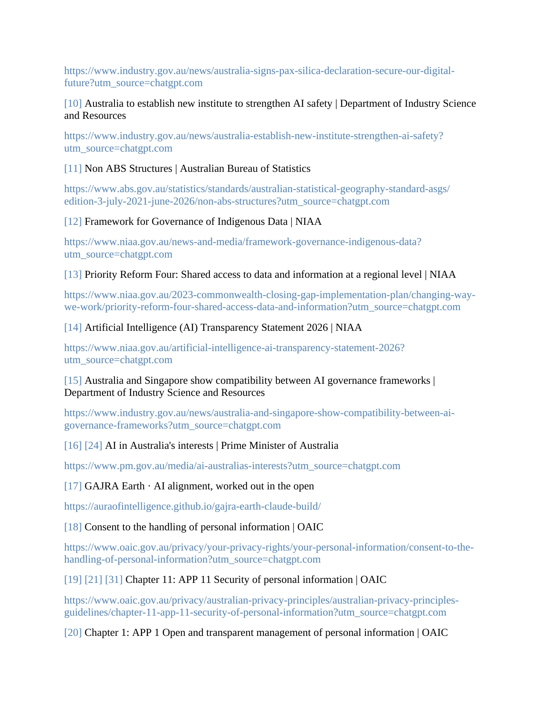
Read selectable text for page 20
Text extracted from this page. Use the page image for its original layout, tables and figures.
future?utm_source=chatgpt.com
[10] Australia to establish new institute to strengthen AI safety | Department of Industry Science
and Resources
https://www.industry.gov.au/news/australia-establish-new-institute-strengthen-ai-safety?
utm_source=chatgpt.com
[11] Non ABS Structures | Australian Bureau of Statistics
https://www.abs.gov.au/statistics/standards/australian-statistical-geography-standard-asgs/
edition-3-july-2021-june-2026/non-abs-structures?utm_source=chatgpt.com
[12] Framework for Governance of Indigenous Data | NIAA
https://www.niaa.gov.au/news-and-media/framework-governance-indigenous-data?
utm_source=chatgpt.com
[13] Priority Reform Four: Shared access to data and information at a regional level | NIAA
https://www.niaa.gov.au/2023-commonwealth-closing-gap-implementation-plan/changing-way-
we-work/priority-reform-four-shared-access-data-and-information?utm_source=chatgpt.com
[14] Artificial Intelligence (AI) Transparency Statement 2026 | NIAA
https://www.niaa.gov.au/artificial-intelligence-ai-transparency-statement-2026?
utm_source=chatgpt.com
[15] Australia and Singapore show compatibility between AI governance frameworks |
Department of Industry Science and Resources
https://www.industry.gov.au/news/australia-and-singapore-show-compatibility-between-ai-
governance-frameworks?utm_source=chatgpt.com
[16] [24] AI in Australia's interests | Prime Minister of Australia
https://www.pm.gov.au/media/ai-australias-interests?utm_source=chatgpt.com
[17] GAJRA Earth · AI alignment, worked out in the open
https://auraofintelligence.github.io/gajra-earth-claude-build/
[18] Consent to the handling of personal information | OAIC
https://www.oaic.gov.au/privacy/your-privacy-rights/your-personal-information/consent-to-the-
handling-of-personal-information?utm_source=chatgpt.com
[19] [21] [31] Chapter 11: APP 11 Security of personal information | OAIC
https://www.oaic.gov.au/privacy/australian-privacy-principles/australian-privacy-principles-
guidelines/chapter-11-app-11-security-of-personal-information?utm_source=chatgpt.com
[20] Chapter 1: APP 1 Open and transparent management of personal information | OAIC
Page 21 of 21
{kind=link}
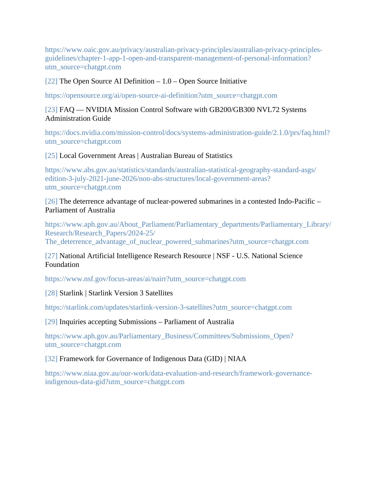
Read selectable text for page 21
Text extracted from this page. Use the page image for its original layout, tables and figures.
guidelines/chapter-1-app-1-open-and-transparent-management-of-personal-information?
utm_source=chatgpt.com
[22] The Open Source AI Definition – 1.0 – Open Source Initiative
https://opensource.org/ai/open-source-ai-definition?utm_source=chatgpt.com
[23] FAQ — NVIDIA Mission Control Software with GB200/GB300 NVL72 Systems
Administration Guide
https://docs.nvidia.com/mission-control/docs/systems-administration-guide/2.1.0/prs/faq.html?
utm_source=chatgpt.com
[25] Local Government Areas | Australian Bureau of Statistics
https://www.abs.gov.au/statistics/standards/australian-statistical-geography-standard-asgs/
edition-3-july-2021-june-2026/non-abs-structures/local-government-areas?
utm_source=chatgpt.com
[26] The deterrence advantage of nuclear-powered submarines in a contested Indo-Pacific –
Parliament of Australia
https://www.aph.gov.au/About_Parliament/Parliamentary_departments/Parliamentary_Library/
Research/Research_Papers/2024-25/
The_deterrence_advantage_of_nuclear_powered_submarines?utm_source=chatgpt.com
[27] National Artificial Intelligence Research Resource | NSF - U.S. National Science
Foundation
https://www.nsf.gov/focus-areas/ai/nairr?utm_source=chatgpt.com
[28] Starlink | Starlink Version 3 Satellites
https://starlink.com/updates/starlink-version-3-satellites?utm_source=chatgpt.com
[29] Inquiries accepting Submissions – Parliament of Australia
https://www.aph.gov.au/Parliamentary_Business/Committees/Submissions_Open?
utm_source=chatgpt.com
[32] Framework for Governance of Indigenous Data (GID) | NIAA
https://www.niaa.gov.au/our-work/data-evaluation-and-research/framework-governance-
indigenous-data-gid?utm_source=chatgpt.com